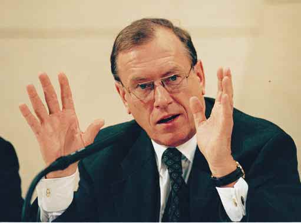
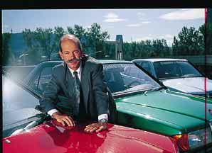
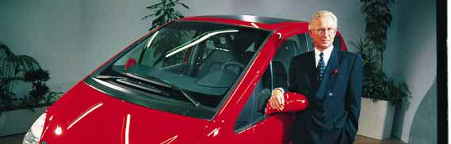
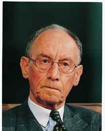

MANAGER MAGAZIN 3/98 ·
S. 14
Markt, und seine Division soll 1998
D A I M L E R - B E N Z
zum erstenmal wieder schwarze Zah-
len schreiben. Als Nachfolger wird der
Das Windsor-Syndrom
erste Mann des Bereichs Lkw-An-
triebsstrang, Klaus Maier (44), ge-
,,Fordern Sie uns! Grillen Sie uns", appellierte Konzernchef Jürgen
handelt.
Schrempp an seine Führungskräfte. Auf dem Topmanagement-Meeting
Durch rechtzeitige Pensionierung
konterte er auch die Attacken seines Vorgängers Edzard Reuter.
entzieht sich Peter Fietzek (59), Be-
reichsvorstand und Asien-Beauftrag-
ter, den Folgen der Reorganisation in
Dennoch gab es am Rande des
Wer etwas ist oder sein möchte
Fernost.
bei Daimler-Benz, der achtet Gipfeltreffens zwei Toppersonalien:
Künftig regieren in der Region
auf die Kleiderordnung; man trägt
Der kantige Horst Zimmer (62), dem
vier ,,Chief Executives" (Japan, In-
Blau im Schwabenkonzern, hell am
es als omnipotentem Chef des Ge-
dochina, Asean, China), die jeweils
Fließband, dunkel auf der Führungs-
schäftsbereichs Lkw Europa immer
das gesamte Konzerngeschäft von
ebene. Und wer den Entscheidungsträ-
gern im Vorstand ganz nahe ist, der
darf sich OFK-Mitglied nennen, der
gehört zum oberen Führungskreis des
Hauses.
Ende Januar zogen rund 1000 der
1400 OFK-Mitglieder in die Stuttgar-
ter Liederhalle ein, viele dunkelblau
gewandet und alle gespannt wie Chor-
knaben vor einem großen Auftritt.
Jürgen Schrempp (53), der Chef,
hatte gerufen, und er verlangte Man-
nesmut: ,,Dies ist unsere gemeinsame
Veranstaltung. Nutzen Sie sie! Fordern
Sie uns! Grillen Sie uns!"
Für Spannung bei dem Treffen am
27. Januar war gesorgt: Nie zuvor la-
gen Markterfolg und Mismanagement
so nahe beieinander; nie zuvor rankten
sich so viele Gerüchte um Vorstände;
nie zuvor hatte ein ehemaliger Vorsit-
zender so mit dem Unternehmen abge-
rechnet wie jetzt Edzard Reuter (70)
in seinen Memoiren (siehe Kasten
Seite 16).
Was sagt Schrempp intern zur
peinlichen Elch-Panne, was zum ver-
unglückten Smart? Welche Signale
sendet der Vorstandschef in Richtung
seiner Kollegen Jürgen Hubbert (58,
Pkw-Geschäft) und Dieter Zetsche
(44, früher Entwicklung, heute Ver-
trieb), die für das Debakel die Verant-
wortung tragen?
ziemlich egal war, wer unter ihm den
Flugmotoren bis Finanzdienstleistun-
Der Mannschaftskapitän ließ sich
Nutzfahrzeugvorstand abgab, verläßt
gen verantworten.
nicht aus der Reserve locken: ,,Wir sit-
den Konzern.
Auf der Veranstaltung selbst ging
zen Ihnen hier als Team gegenüber",
Zimmer geht aus gesundheitli-
es dann zunächst um einen Mann, der
verkündete Schrempp. Ein größeres
chen Gründen im Zenit seiner Kar-
seit knapp drei Jahren zu internen
Revirement, so es denn dazu kommt,
riere: Die beiden neuen Modellrei-
Daimler-Foren nicht mehr eingeladen H.-G. O
bleibt bis nach der Hauptversammlung
hen Actros (schwere Lastkraftwagen)
wird: Edzard Reuter. Das Wirken sei-
am 27. Mai tabu.
und Atego (Verteiler-Lkw) sind im
E
D
nes Vorgängers kann Schrempp als
Blau Gelb Rot Schwarz
S. 14
Manager Magazin 3/98



MANAGER MAGAZIN 3/98
S. 15
durchaus segensreich empfinden: Die
schäft". Und bei den Zahlen. Zum
die in der Automobilindustrie ihres-
Kurzkritik an Reuters Buch ,,Schein
Zeitpunkt des Führungswechsels vor
gleichen sucht. Der Konzernchef
und Wirklichkeit" (,,Wir lehnen ein
zweieinhalb Jahren, so der Daimler-
spricht angesichts der vielen Fehl-
solches Vorgehen entschieden ab")
Chef, waren gerade einmal 5 von 35
tritte bereits von einem ,,House-of-
trug dem Vorsitzenden den größten
Geschäftsbereichen profitabel.
Windsor-Syndrom". Schrempp: ,,An-
Beifall ein. Die kritische Beschäfti-
Inzwischen verdienen alle vier
dere können sich Fehler leisten, wir
gung mit dem alten Regime ist längst
großen Divisions Pkw, Lkw, Aero-
nicht."
zum sozialen Kitt im affären- und kri-
space und Dienstleistungen ordent-
Hinter der glanzvollen Fassade
sengeschüttelten Konzern geworden.
lich Geld. Von den 23 übriggebliebe-
von Rekordabsatz (716 000 Pkw)
Noch einmal betonte Schrempp
nen Geschäftsbereichen waren 1997
und internationalen Auszeichnungen
deshalb den Kulturwandel: ,,Die Zei-
nur noch fünf defizitär: die drei Lkw-
knirscht es mächtig:
ten, die Inhalte, der Umgang miteinan-
Sparten Europa, Antriebsstrang und
Die Auslieferungsqualität von neuen
der haben sich geändert und damit
Unimog, die Bahntechnikbeteiligung
Mercedes-Limousinen nimmt nach ei-
auch die Form dieser Veranstaltung.
Adtranz (siehe auch Seite 24) sowie
ner Händlerumfrage der Forschungs-
Wir wollen keine Verkündigung von
Smart.
stelle Automobilwirtschaft an der Uni-
versität Bamberg seit 1994 dramatisch
ab.
Die weit fortgeschrittene Entwick-
lung eines neuen Vierzylinder-Benzin-
motors mußte Ende 1997 gestoppt
werden, weil die Mercedes-Ingenieure
schlicht den technischen Vorsprung
der Japaner bei der Benzin-Direktein-
,,Andere können
spritzung übersehen hatten (Beispiel:
sich Fehler leisten,
Mitsubishi GDI).
wir nicht",
Die Planzahlen für Nischenmodelle
klagte Daimler-
wie den Roadster SLK, das CLK-
Benz-Chef Jürgen
Coupé oder die M-Klasse liegen zig-
Schrempp (l.) über
tausendfach hinter den tatsächlichen
die traumatischen
Absatzmöglichkeiten; extreme Liefer-
Pannen der
fristen schaffen massenhaft Frust und
vergangenen
Ärger bei der verwöhnten Daimler-
Monate. Die
Klientel.
dafür verantwort-
Der Serienstart der A-Klasse wurde
lichen Vorstände
nach der Elch-Test-Blamage zum
Jürgen Hubbert
spektakulärsten Flop in der Unter-
(rechts oben)
nehmensgeschichte. Auch die Ein-
und Dieter Zetsche
führung des ebenfalls instabilen
blieben vorerst
Stadtflitzers Smart mußte verschoben
ungeschoren.
werden. Der Bonsai-Benz ist jetzt
frühestens im Herbst 1998 ausge-
wachsen.
Das grobe Mismanagement bei
der A-Klasse und beim Smart kostet
den Konzern allein 1997 und 1998
knapp eine Milliarde Mark. Doch der
Chef spricht von ,,Fehlerkultur" und
läßt, jedenfalls im Vorstand und für ZEITENSPIEGEL
der Kanzel." Und dann ganz deutlich
Zumindest die Grundlagen für
den Augenblick, Milde walten. Sein ei-
die inhaltliche Abgrenzung: ,,Wir
den Aufstieg des Konzerns in die inter-
genes Debakel mit der Pleite der Flug-
wollen nicht um jeden Preis wach-
nationale Rendite-Liga sind demnach
zeugtochter Fokker liegt für einen här- /
sen, den Fehler haben wir schon ein-
geschaffen.
teren Auftritt wohl noch nicht lange T. KLINK
mal gemacht; wir wollen profitabel
Den ambitionierten Plänen steht
genug zurück.
,
A
wachsen."
allerdings im wichtigsten Kernge-
So mußte als Warnung an den . POHLMANN
Schrempp, so ein Teilnehmer,
schäft, dem mit Personenwagen, eine
Rest der Truppe lediglich der Smart
,,packte die Leute beim Tagesge-
Pleiten- und Pannenserie gegenüber,
herhalten. Dort ließ Jürgen Schrempp
Manager Magazin 3/98
S. 15

MANAGER MAGAZIN 3/98 ·
S. 16
,,Was zum Teufel hat ihn getrieben"
Reuter-Erinnerungen: Die negativen Kommentare überwiegen
Schein und Wirklichkeit" die ne Unternehmenspolitik, und es ge- ,,Daß Reuter nur hadert, anstatt sei-
Memoiren von Edzard Reuter,
lingt ihm auch zum großen Teil."
nen Verstand einzusetzen, daß er alte
dem ehemaligen Vorstandsvorsitzen-
Ex-Daimler-Sprecher Winfried Münster
Rechnungen begleicht, anstatt sich
den der Daimler-Benz AG, sorgten
in ,,Die Woche"
um ein abgewogenes Urteil zu
für Aufsehen, noch bevor sie erschie-
bemühen, das verübeln Reuter selbst
nen waren. Was Reuters grimmiger
,,Wir lehnen ein solches Vorgehen von
wohlgesonnene Leute."
Rückblick ,,schwarz auf weiß bietet,
Stuttgarter Nachrichten
jemandem, der eine herausragende
ist kein schöner Anblick. Aber lehr-
Stellung in unserem Unternehmen in-
reich". So urteilte die ,,Frankfurter
nehatte, entschieden ab."
,,Sein Buch wird sicherlich nicht
Rundschau", nachdem manager
Schreiben des Daimler-Benz-Vorstands
dazu beitragen, Reputation und An-
magazin in seiner Februar-Ausgabe
an seine Führungskräfte
sehen zurückzuerlangen."
vorab über das Buch berichtet hatte.
Handelsblatt
Kollegen und Geschäftspartner,
deutsche und internationale Medien
,,So offen er Schrempp und den AEG-
,,Es irritiert, wenn Reuter so rechtet
kommentierten Reuters Erinnerun-
Managern Fehler anlastet, so vage
und sich dabei selbst zum auf kläreri-
gen. Auszüge:
bleibt seine Aussage über eigene Irrtü-
schen Weltgeist hoch zu Pferd stili-
mer und Versagen."
siert. Haben am Ende doch diejeni-
,,Dieser sich selbst überschätzende
Reuter-Biograph Hans Otto Eglau
gen recht gehabt, die zwar seine bril-
in ,,Die Zeit"
Einfaltspinsel."
lante Intelligenz erkannten, ihn aber
Ex-Daimler-Chef Joachim Zahn
nicht an der Spitze des Konzerns ha-
im Süddeutschen Rundfunk
,,Woher das Magazin das Manuskript
ben wollten?"
wohl hat?"
Frankfurter Allgemeine Zeitung
,,Einfalt meint, der versteht vom Ge-
Hannoversche Allgemeine Zeitung
schäft nix, und Pinsel bedeutet, der
,,Wie zu seiner Zeit als Vorsitzender
schwätzt trotzdem scheinbar ge-
,,Man mag das Resultat seiner un-
weist Reuter heute in seinem Buch
scheit daher."
ternehmerischen Bemühungen als
das Argument zurück, daß seine Ex-
Joachim Zahn in ,,Der Spiegel"
ziemlich erfolglos betrachten: Hier pansionsstrategie und seine Vision
ist einer, der sich seinen Kritikern vom integrierten Technologiekon-
,,Was zum Teufel hat Reuter getrie-
stellt und auch im nachhinein beim
zern das Unternehmen ins finanzi-
ben, mir angesichts meiner angeb-
Austeilen noch keineswegs erlahmt
elle Desaster führten."
lich ekelhaften Charaktereigen-
ist."
International Herald Tribune
schaften auch noch eine Stabsstelle
Börsen-Zeitung
anzubieten, mit dem Ziel, in den
,,Selbst die Hölle kennt keinen ge-
Daimler-Vorstand zu gehen?"
waltigeren Zorn als den von abge-
Martine Dornier-Tiefenthaler
halfterten Executives. Doch Edzard
in der ,,Stuttgarter Zeitung"
Reuter ... wählte den falschen Mo-
ment, um zurückzuschlagen. Seine
,,Reuter (hat sich) nie zugehörig ge-
Attacken dürften das Management
fühlt zu dieser Kaste reaktionärer In-
ziemlich kaltlassen."
dustrieller ... Reuter rechtfertigt sei-
Financial Times
die Führungsmannschaft um Ent-
blieben, anders als die Kollegen des el-
wicklungschef Johann Tomforde
sässischen Ablegers Smart, bisher von
und Finanzchef Christoph Baubin
Sanktionen verschont.
feuern.
,,Noch sind wir nicht überall da,
Beim Führungskräfte-Forum leg-
wo wir hin wollen", trieb Schrempp
te der Vorsitzende nach: ,,Es war offen-
seine OFKler an, ,,wir müssen Großes
sichtlich, daß die Probleme bekannt
vollbringen wollen und es einfach
waren, aber verschwiegen wurden.
tun."
Wir haben daher umgehend personelle
Auch unter neuer Führung, so H.-G. O
Konsequenzen gezogen."
scheint es, klafft bei Daimler-Benz E
Das war eine Warnung, die
Buchautor Edzard Reuter:
noch eine erhebliche Lücke zwischen D, R. B
Schrempp vor allem an die Fahrzeug-
Weltgeist hoch zu Pferd
Anspruch und Alltag. Zwischen RAU
bauer in Untertürkheim richtete. Die
,,Schein und Wirklichkeit".
fal N
Blau Gelb Rot Schwarz
S. 16
Manager Magazin 3/98